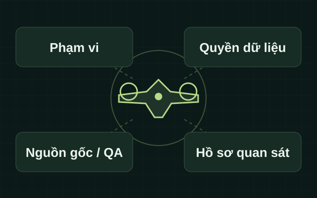

Thông tin quan sát bổ trợ
Cơ quan quản lý có thể cần thông tin hiện trạng để xem xét sự kiện. Nhu cầu cụ thể tại khách hàng Việt Nam chưa được khảo sát.
S0075 / Tuần tra biên giới VTOL 50–100 km
Đề xuất bổ sung thông tin quan sát hiện trạng và sự kiện biên giới cho cơ quan có thẩm quyền, từ làm rõ nhu cầu đến kiểm chứng chất lượng và bàn giao dữ liệu có truy vết.
50–100 km là nhãn trong tên dịch vụ. Đại lượng cự ly chưa được xác định và không phải cam kết năng lực.
01 / Bài toán cần làm rõ
Các nhu cầu dưới đây là cơ sở nghiên cứu. Phạm vi và mức độ phù hợp tại từng đơn vị cần được xác nhận.
Cơ quan quản lý có thể cần thông tin hiện trạng để xem xét sự kiện. Nhu cầu cụ thể tại khách hàng Việt Nam chưa được khảo sát.
Ảnh và video cần đáp ứng mục tiêu quan sát, có thông tin nguồn gốc và tiêu chí kiểm soát chất lượng.
Cự ly một chiều, bán kính, tổng hành trình và tầm liên kết điều khiển là những đại lượng khác nhau.
Người nhận, quyền truy cập, thời gian lưu giữ và giới hạn sử dụng cần được xác định theo dự án.
02 / Phạm vi giải pháp
S0075 tập trung vào hỗ trợ quan sát hiện trạng và sự kiện biên giới. Tài liệu nghiên cứu ghi nhận tiền lệ hàng hải, biên giới biển của EMSA; khả năng áp dụng tại biên giới đất liền Việt Nam và năng lực GASCOLAE chưa được kiểm chứng.
L1 làm rõ yêu cầu và bằng chứng khả thi. L2 đề xuất kiểm chứng thông qua pilot được phê duyệt riêng. L3 hướng tới dữ liệu quan sát và báo cáo trong phạm vi hợp đồng được duyệt. Các cấp hiện là lộ trình đề xuất.

Hướng tới hỗ trợ xem xét hiện trạng, không thay lực lượng hoặc quyết định công vụ.
Đầu ra dự kiến đi kèm giới hạn chất lượng và phạm vi sử dụng đã được xác nhận.
Hồ sơ khả thi và pilot giúp xem xét các tiền đề, không tự mở quyền vận hành.
03 / Phương pháp & năng lực đề xuất
Thông tin dưới đây mô tả hướng nghiên cứu và điều kiện sử dụng. Chưa xem là cấu hình hoặc hiệu năng GASCOLAE đã được nghiệm thu.
Chưa lựa chọn nền tảng và payload GASCOLAE. Tiền lệ VTOL trên biển không chứng minh năng lực tại biên giới đất liền.
Ảnh, video và metadata chỉ thuộc đầu ra dự kiến khi được phép; tiêu chí phải xác nhận theo mục tiêu dự án.
Liên kết điều khiển, dẫn đường, an toàn và yếu tố con người cần hồ sơ kiểm chứng riêng.
L1 tổ chức yêu cầu, thẩm quyền, rủi ro và ma trận yêu cầu–bằng chứng thành sáu đầu ra D1–D6.
Kiểm chứng chất lượng và khả năng tích hợp trong phạm vi được duyệt; chưa có kết quả GASCOLAE.
Báo cáo hiện trạng và sự kiện có truy vết là đầu ra đề xuất; chưa có SLA hoặc cảnh báo tự động được xác nhận.
Giới hạn cần đọc cùng kết quả. Quan sát không bao gồm nhận dạng người hoặc kết luận hành vi vi phạm mặc định. SAR và môi trường chỉ là hướng bổ trợ trong phạm vi quan sát đã được duyệt.
04 / Tình huống sử dụng
Các tình huống là đề xuất trong tài liệu nghiên cứu. Đầu ra và quyền triển khai cần được xem xét riêng.
Trọng tâm là hiện trạng và sự kiện trong phạm vi được duyệt. Tiền lệ nguồn thuộc biên giới biển; đất liền cần xác minh riêng.
Hồ sơ L1, pilot/QA ở L2 và bộ thông tin quan sát dự kiến ở L3.
Chỉ bổ trợ nhu cầu hàng hải hoặc biên giới trong cùng phạm vi được phép; không là dịch vụ SAR độc lập.
Thông tin quan sát cho người có thẩm quyền; không cam kết phát hiện người hoặc kết quả cứu nạn.
Hướng bổ trợ liên quan khu vực quan sát được duyệt, với cảm biến và tiêu chí phù hợp.
Dữ liệu hiện trạng có giới hạn; không mặc định đo lường hoặc chẩn đoán môi trường.
Xem xét chất lượng dữ liệu và khả năng tích hợp trong khu vực kiểm soát được phép.
Báo cáo pilot, QA và dữ liệu mẫu được phép; chưa phải nhiệm vụ tuần tra thực tế.
05 / Quy trình ở mức khái niệm
Lộ trình giúp hiểu cách tổ chức hồ sơ và điều kiện chuyển bước. Đây không phải hướng dẫn vận hành hoặc bằng chứng đã triển khai.
Xác nhận nhu cầu UC-A, phạm vi biển hoặc đất liền và ý nghĩa đại lượng 50–100 km.
Tổ chức D1–D6: yêu cầu, thẩm quyền, bằng chứng kỹ thuật, an toàn và quyền dữ liệu.
L2 chỉ được xem xét sau phê duyệt các điều kiện; hiện chưa thực hiện pilot.
L3 đề xuất thu nhận dữ liệu được phép, kiểm soát chất lượng và diễn giải giới hạn.
Xác nhận người nhận, định dạng, tiêu chí nghiệm thu và phạm vi sử dụng kết quả.
06 / Lộ trình & đầu ra
L1, L2 và L3 là lộ trình đề xuất, chưa phải các gói thương mại được phê duyệt. Mỗi bước có đầu ra và điều kiện riêng.
Chuẩn bị hồ sơ trước quyết định
Sáu đầu ra đề xuất giúp làm rõ mục tiêu, quyền, bằng chứng và điều kiện kiểm chứng; chưa phải hoạt động tuần tra.
Làm rõ nhu cầu, phạm vi và đại lượng cự ly.
Tổng hợp điều kiện cần người có thẩm quyền xác nhận.
Hồ sơ phi nhạy cảm cho bước xem xét khả thi.
Liên kết yêu cầu với bằng chứng hệ thống, payload và dữ liệu.
Đề xuất tiêu chí chất lượng, đối chứng và giới hạn.
Làm cơ sở cho người có thẩm quyền xem xét tiếp tục hoặc dừng.
Đầu ra dự kiến · Chưa thực hiện
Kiểm chứng chất lượng thông tin và khả năng tích hợp sau phê duyệt riêng. Hồ sơ L1 không tự cho phép tiến hành pilot.
Ghi nhận kết quả kiểm chứng theo tiêu chí được duyệt.
Phạm vi truy cập, định dạng và quyền bàn giao cần được xác nhận.
Không mặc định chuyển sang L3 sau khi có pilot.
Đầu ra dự kiến · Chờ phê duyệt
Thông tin quan sát biên giới theo nhu cầu, thẩm quyền và hợp đồng được duyệt; năng lực GASCOLAE chưa được xác nhận.
Ảnh, video và metadata phù hợp nếu được duyệt.
Thông tin nguồn gốc, QA và giới hạn sử dụng đi cùng kết quả.
Theo phê duyệt cụ thể; không thay quyết định công vụ hoặc hứa SLA.
Phạm vi thương mại cần được Sales/Finance xem xét riêng. Hồ sơ hiện chưa xác nhận giá, thời hạn thực hiện hoặc SLA.
07 / Câu hỏi thường gặp
Câu trả lời theo nội dung nghiên cứu S0075. Các nội dung chưa xác minh cần người phụ trách có thẩm quyền xem xét.
Chưa có năng lực hoặc dự án GASCOLAE được xác nhận trong bộ tài liệu. Tiền lệ EMSA thuộc biên giới biển và hàng hải; không thể suy ra đã triển khai tại biên giới đất liền Việt Nam.
Đây là nhãn được giữ trong tên. Cự ly một chiều, bán kính, tổng hành trình hay tầm liên kết điều khiển chưa được chốt; không dùng nhãn này như cam kết hiệu năng.
L1 là sáu hồ sơ khả thi D1–D6. L2 đề xuất pilot để kiểm chứng chất lượng và tích hợp. L3 đề xuất bộ dữ liệu quan sát và báo cáo theo phạm vi được duyệt. Mỗi cấp cần phê duyệt riêng.
Không. UC-B và UC-C chỉ bổ trợ cho phạm vi quan sát biên giới được duyệt. UC-D là pilot kiểm chứng tiền đề, chưa phải nhiệm vụ tuần tra thực tế.
Trang không tiếp nhận dữ liệu hoặc tệp. Phạm vi, quyền chia sẻ và người nhận cần được chủ thể có thẩm quyền xác nhận qua kênh được phép.
Chưa có gói thương mại hay SLA được duyệt. Nội dung thương mại cần được Sales/Finance xem xét cùng phạm vi dự án.
08 / Trạng thái hồ sơ
17 nội dung cần xác minh còn mở. Cần xác nhận phạm vi, năng lực, quyền dữ liệu, tiêu chí nghiệm thu và quyền công bố trước bước triển khai tiếp theo.
Trao đổi với người phụ trách dự án qua kênh nội bộ được phép. Thông tin liên hệ và kênh tiếp nhận sẽ được bổ sung sau khi hồ sơ được duyệt.
Xem lại đầu ra dự kiếnNội dung trang được biên tập từ Landing Page Content phiên bản 1.0 trong bộ tài liệu S0075; không bổ sung tuyên bố hiệu năng hoặc dự án đã thực hiện.
Phạm vi và tiền lệ: mục 1–3, SRC-37. Năng lực và ứng dụng: mục 5–6. Lộ trình và bàn giao: mục 7–9. Giới hạn và trạng thái: mục 11–15. Các mã nguồn được giữ theo tài liệu; không xem chúng là bằng chứng triển khai GASCOLAE.